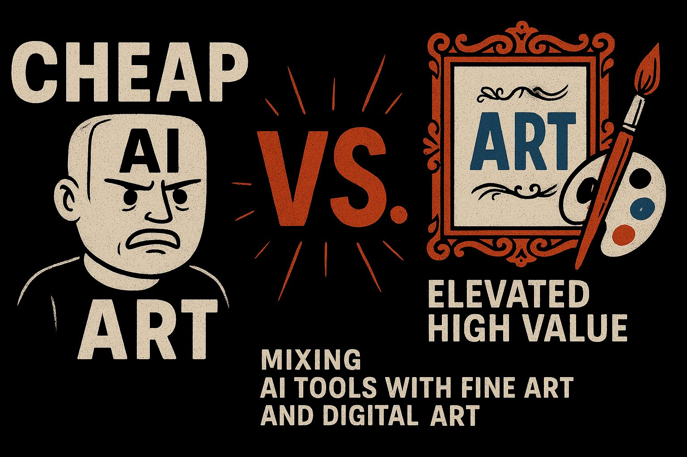

The State of AI Art: Elevating Creativity Through Human-AI Collaboration
“Cheap AI Art VS Elevated High Value Art.”

Introduction: What Is “High Art” in the Age of AI?
Artificial Intelligence (AI) has taken the art world by storm, sparking debates about its role in creativity. Some call it a threat to human artists, while others see it as a revolutionary tool. I believe the truth lies in a powerful synergy—what I call “High Art.” This is high-value art created by layering traditional artistry, digital techniques, and complex AI workflows, all guided by human intervention at multiple stages. The result? Rich, complex artwork that goes beyond what AI can achieve alone with simple prompts—at least for now.
In this article, I’ll explore the current state of AI art, argue why human vision and emotion remain irreplaceable, and showcase a “fake” King Conan article I created to compare AI’s capabilities with human creativity. I’ll end on an optimistic note, encouraging artists to embrace generative AI as a partner in their creative journey.
The Role of AI in Art: A Tool, Not a Replacement
AI art has come a long way. Early generative models produced rudimentary images, but today’s systems—like Midjourney, Stable Diffusion and more recently OpenAi’s 4o autoregressive model, —can create stunning visuals in seconds. Yet, there’s a catch: AI excels at mimicry, not meaning. It can replicate styles and patterns, but it lacks the human vision and emotional depth that define truly great art.
That said, AI isn’t just a gimmick. Prompting itself is an art form—one where good writers with vivid imaginations have an edge. A well-crafted prompt can steer AI toward more definite and efficient outputs, but it’s still just a starting point. The real magic happens when humans take the reins, refining and enhancing what AI produces to create something truly unique.
The Power of Human Intervention: Crafting “High Art”
“High Art,” as I see it, emerges from complex workflows that blend traditional artistry (think hand-drawn sketches or paintings), digital tools (like Photoshop or Procreate), and AI techniques. Human intervention is key at every step—directing the process to ensure the final piece reflects a cohesive vision and emotional resonance.
For example:
- An artist might sketch a character by hand, use AI to generate color variations, and then digitally refine the details.
- Or they could start with an AI-generated base image, then layer textures, adjust lighting, and infuse personal flair through manual edits.
These workflows produce art that’s richer and more nuanced than what AI can churn out alone. It’s the human touch—our ability to feel, imagine, and connect—that elevates the work to “High Art.”
Case Study: The “Fake” King Conan Article
To illustrate this, let’s look at a project I created: a “fake” King Conan article featuring both text and artwork. When I tasked ChatGPT with creating a visual newspaper article about King Conan, the layout it proposed looked decent enough to keep as a foundation. However, the text was plagued with multiple errors—clunky wording and inconsistencies that disrupted the story—and the accompanying image was of such poor quality it barely resembled the mighty barbarian king. Determined to elevate the piece, I created a striking, high-quality image that captured King Conan’s essence and used professional software to craft error-free text and a refined design. When you compare the two side-by-side, the contrast in quality is striking: the AI’s version feels rough and unfinished, while my human-enhanced creation shines with polish and precision. This gap underscores the limitations of AI—it can sketch a starting point, but it takes the skill of talented graphic designers and illustrators to bring the vision to life. Far from being replaced, human creativity remains essential in delivering exceptional results.
ChatGPT vs. Human Design.
The Irreplaceable Human Element
Why does this matter? Because humanity cannot be synthesized—not yet, anyway. High-value art isn’t just about aesthetics; it’s about emotion, experience, and connection. A machine can’t replicate the raw grief in Van Gogh’s brushstrokes or the haunting commentary in Picasso’s Guernica. These works resonate because they’re born from lived human struggles and insights.
AI can assist with the technical side—generating ideas, speeding up workflows—but it’s the artist’s vision that breathes soul into the piece. That feeling of awe at real beauty, the depth of thought in a masterful work—it’s uniquely human.
Embracing AI as a Creative Partner
Rather than fearing AI, I see it as a collaborator that can enhance an artist’s work. Here’s how artists can start:
- Experiment: Use AI to generate ideas, textures, or color palettes.
- Overcome Blocks: Let AI spark inspiration when you’re stuck.
- Stay in Control: Treat AI as a tool to amplify your vision, not replace it.
AI also democratizes creativity, letting people without traditional skills explore art in new ways. The future isn’t about AI taking over—it’s about artists harnessing it to push boundaries further.
Conclusion: The Future Is Human-AI Collaboration
AI art is here to stay, and that’s exciting. While it will keep evolving, the human touch—our vision, emotion, and intent—will always define what makes art truly valuable. My King Conan project showed me that AI can be a powerful ally, but it’s the artist who turns raw potential into something extraordinary.
So, to my fellow creators: don’t shy away from generative AI. Dive in, experiment, and make it your own. The most breathtaking art will come from the heart and mind, with AI as the brush that helps you paint the future.
What do you think? Try AI for yourself, and share your experiences below—I’d love to hear how it’s shaping your creative journey!